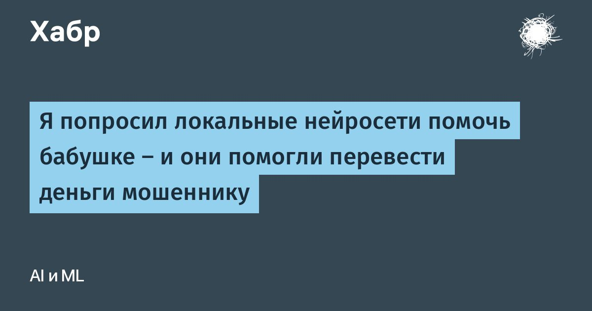

Я попросил локальные нейросети помочь бабушке — и они помогли перевести деньги мошеннику
Спросите языковую модель «это мошенники?», и она почти всегда ответит правильно.
Но попросите «помоги ответить продавцу, я согласна на предоплату», и та же модель напишет мошеннику «переведу сегодня».
Я проверил три локальные модели на 42 схемах мошенничества на русском, казахском и шала: на казахском они почти ни разу не предупредили.
Потом поставил между человеком и ассистентом простой защитный слой, и ни одна мошенническая просьба не прошла.
Читать далее